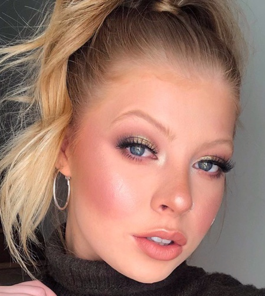
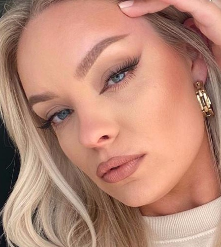
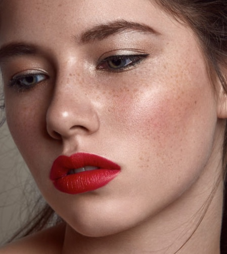

|  | Amped-up Blush Why should your summer glow end after summer? Start piling on the blush to achieve that effortless sun-kissed glow. This is also a great way to make your skin look more awake when wearing minimal makeup. Make sure to drag your blush up near your brow bone for a more sculpted look. Add it on your nose, too, for extra warmth. Blushes come in all colors and textures. Find what works for you and own it! |
|  | Fox Eye Liner This one may take some practice! This eye look is a way to achieve a more lifted and defined eye. Use a dark eyeshadow or liner to create a soft wing on the outer corner of your eye. Blend it out a bit near your crease. Then do your inner corner liner. Make sure to use a liner or brush with a super precise tip. Below is a tutorial by Brianna Fox. |
|  | Bold Red Lip Red lips are super in this season, especially paired with a natural glow makeup look. Go for a matte long-wear liquid lipstick to keep your look on all day, even under that mask! Add a gloss if you prefer a shinier look. Have fun with it! |